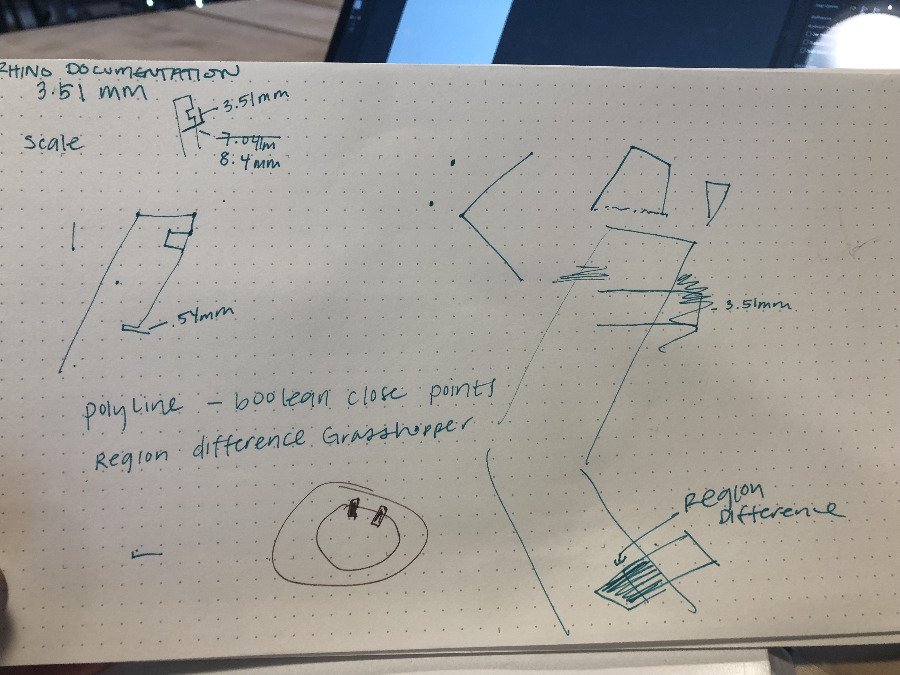
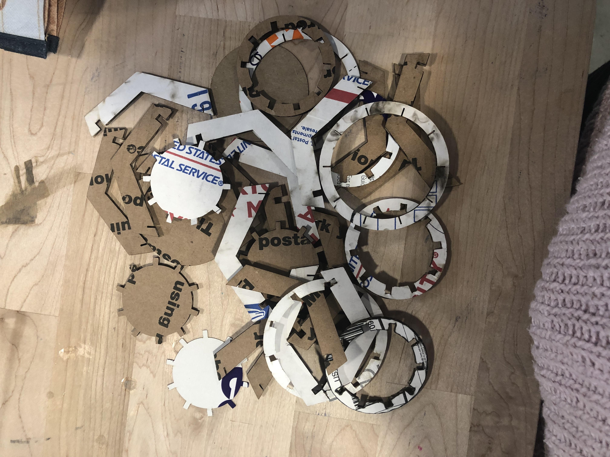
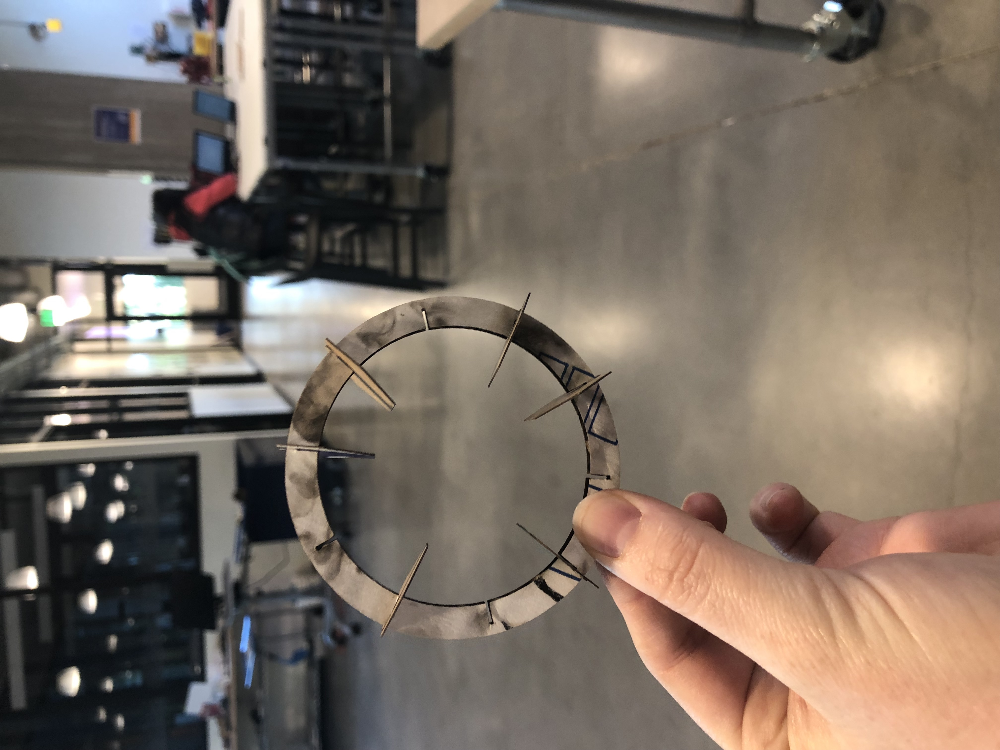
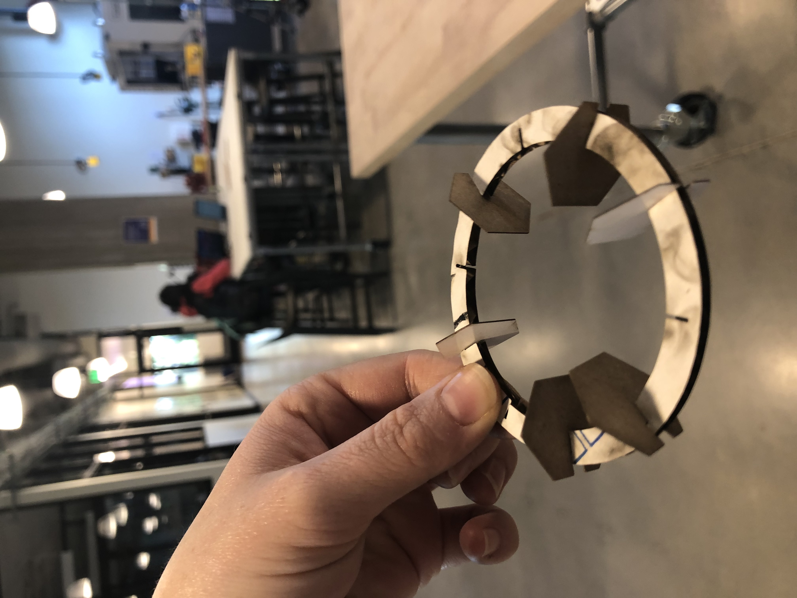

Julie's Assignment 3!

Here is all the documentation for assignment 2!
Phase 1: Planning
I could have done better in planning for this week. With the mix of the holiday weekend and having a crazy work schedule, I did not give myself enough time in the planning phase and it impacted the design and execution phases of my assignment (good learning experience to give myself more time in the future)
I began by lighting sketching and putting my dimensions in
I spent the bulk of my time trying to undertsand Grasshopper. It's been a while since I felt pure rage when using technology, and as a UX person there's nothing worse. Grasshopper was the most frustrating application I could ever use. I sincerely apologize to the Tuesday evening Mill Crew who had to listen to me swear for 4 hours.

After 6 hours in the Mill finagling with Grasshopper, I decided to call it quits and come back on Wednesday. I began printing and continued to run into issues, I changed and altered the sizes, but when attempting to assemble my (slightly different shaped cardboard vase, the pieces would not fit with each other. I accidently designed my long rectangular pieces the wrong way, the chevron size should be facing the other way. This mistake was unfortunate, and I did not have enough time to go back into Grasshopper and fix the chevron piece.

See cardboard vase graveyard
See Vector file here
Due to time contstraints, I decided to pivot and change my shape. I know this was frowned upon, but I wanted to have SOMETHING to show in class. I pivoted my project using and created a different shape (and built it in illustrator, because given the time constraint mentally and physically, I couldn't handle another go-around with Grasshopper.
I created Hexagons to fit into one of the bases of the vase.



Iteration 2

Iteration 3
Phase 3: Printing
Next I started printing, and went through a few practice trials....


It was during these trials that I adjusted the size of the vectors and re-measured the size of my cardboard.
And Voila! A cardboard vase
Credits: Thanks to Tanya for help with the printing settings and feedback on my designs!